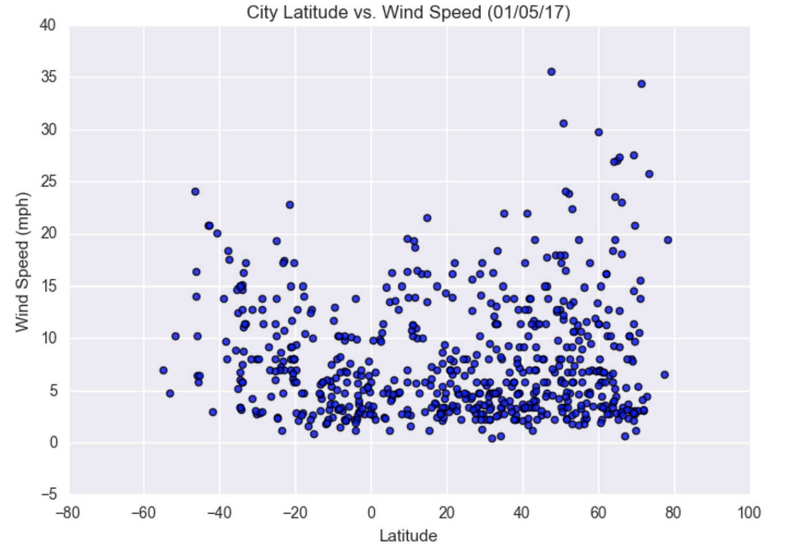

Summary: Latitude vs. X

The purpose of this project was to analyze how weather changes the closer you get to the equator. To accomplish this analysis, weather pulled data from the OpenWeatherMap API to assemble a dataset of over 500 cities.
After assebling the dataset, we used Matplotlib to plot various aspects of weather vs.latitude. Factors we looked at included: temperature, cloudiness, wind speed and humidity. This site provides the source data and visualizations created as part of the analysis, as well as explanations and descriptions of any trends and correlations witnessed.
Comparisons

